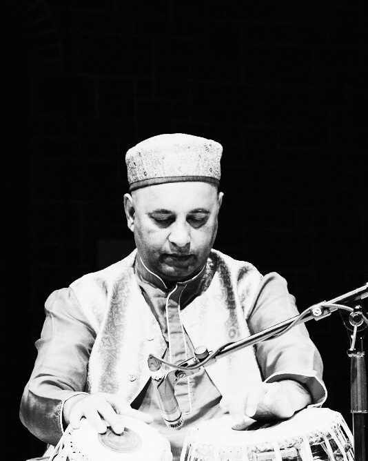
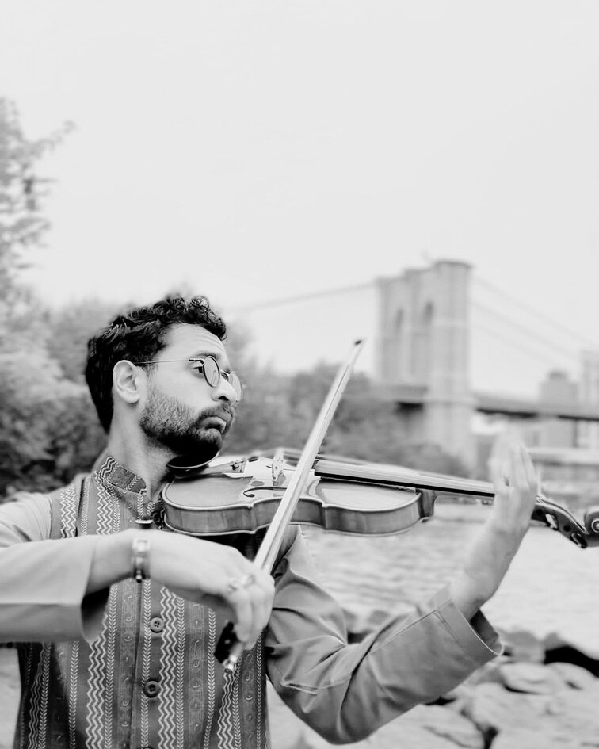
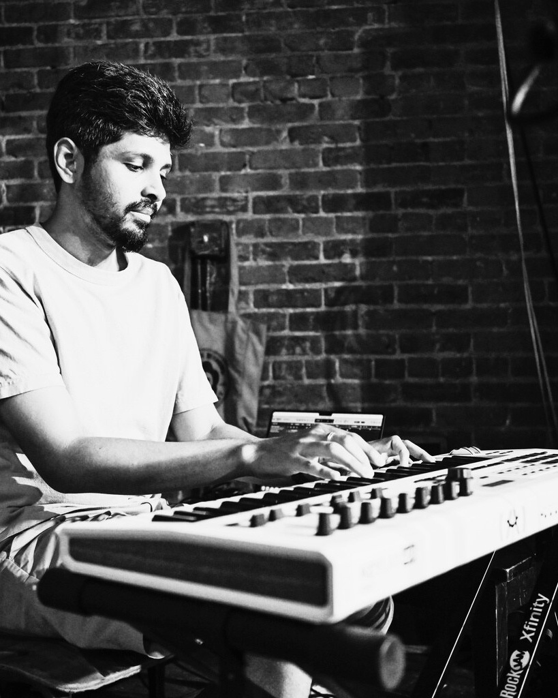
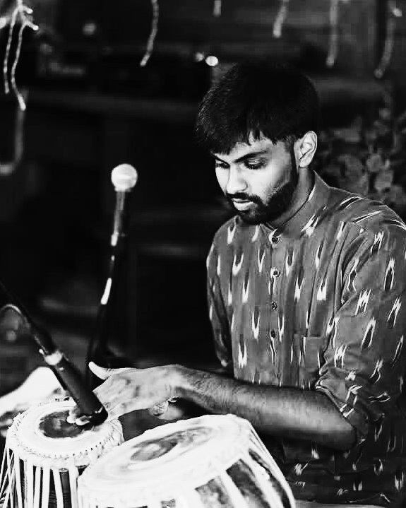

Tehreem Khan
Sitar




Silsila means continuation, the unbroken line through which South Asian classical music has passed from one generation to the next, each note carrying the wisdom of the past while opening space for new expression.
Resonance is the lingering voice of the sitar: the way a note keeps sounding long after it is struck, connecting artists, traditions, and audiences across time.
This evening traces the enduring connection between melody, rhythm, and expression, and the bond between teacher and disciple that has sustained this music for generations.
Shri Jayanta Banerjee is an internationally acclaimed sitarist, composer and multidisciplinary musician whose artistry bridges Indian classical traditions with contemporary and global expressions. He trained under eminent gurus including Shri Amit Prasanna Mukherjee, Pt. Devi Prasad Chatterjee, Pt. Santosh Banerjee of the Rampur Gharana and Pt. Robi Chakraborty of the Maihar Gharana. Alongside the sitar he is proficient in the sarod, harmonium and keyboards, and is also a trained vocalist.
He has performed across India and internationally at the Hollywood Bowl, Royal Festival Hall, the National Centre for the Performing Arts, the Asian Art Museum, the Palace of Fine Arts and the Sydney Opera House, and has collaborated with Padma Vibhushan Pt. Birju Maharaj, Pt. Chitresh Das and Vidwan Vikku Vinayakram.
He is also a composer, educator and cultural curator, and the founder of “Sambandh,” a festival reviving the intimate Baithaki tradition through interdisciplinary collaborations across music, dance and theatre.
Pandit Samir Chatterjee is a virtuoso tabla player who travels widely throughout the year, performing as a soloist and alongside outstanding musicians from both Indian and non-Indian traditions. He performed at the Nobel Peace Prize ceremony in Oslo in 2007, and several times at the United Nations General Assembly.
All of his teachers have been of the Farrukhabad Gharana, which he now represents. In concert he has accompanied many of India's greatest musicians, among them Pt. Ravi Shankar, Ud. Vilayat Khan, Pt. Bhimsen Joshi, Pt. Jasraj, Pt. Nikhil Banerjee, Pt. Shivkumar Sharma and Pt. Hariprasad Chaurasia. Based in New York, he has performed with Branford Marsalis, Ravi Coltrane, Joshua Bell and the Boston Philharmonic. He is the Founder-Director of Chhandayan and the author of A Study of Tabla.




The finale, A Dialogue Between East and West, brings these voices together with the sitar and tabla: a conversation across traditions conducted with mutual respect, curiosity and shared expression.
A sitar instrumental album that moves through shifting emotional and sonic landscapes, each composition a distinct exploration of mood, texture and space. The album is shaped by an interest in sound as experience, where melody and resonance create changing environments rather than fixed narratives.